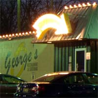

Grab a bite in Waco
Restaurants in Waco offer a variety of choices to suit every taste and budget. From Tex-Mex tamales to old-world Thai, Waco's cuisine is a daily celebration of its colorful culture. From plain to fancy, family-style to date-style, restaurants in Waco serve up American, Mexican, French, Chinese, Japanese, Korean, Thai, Italian, Cajun, and good ol' Texas barbecue that can't be beat.
This is a partial list. For full listings, please view the Waco Convention and Visitors Bureau listings.
Cricket's Grill & Drafthouse
American| 254-754-5663 | |
| 214 Mary Avenue Waco, Texas 76704 | |
| 11:00am - 2:00am Sun-Sat. |

George's Restaurant
American| 254-753-1421 | |
| 1925 Speight Waco, Texas 76706 | |
| 6:30am - 12:00am Mon-Sat. |

1424 Bistro
European| 254-752-7385 | |
| 1424 Washington Ave Waco, TX 76701 | |
| 11:00am-2:00pm Tue-Fri. & Sun. 5:00pm-10:00pm Tue-Sun. |
Gratziano's Restaurant
Italian| 254-752-8789 | |
| 217 Mary Avenue Waco, TX 76701 | |
| 11:00am - 10:00pm Mon-Sat. |
Elite Grill
American| 254-754-4941 | |
| 2132 S Valley Mills Drive Waco, Texas 76706 | |
|
11:00am - 10:00pm Sun-Thu. 11:00am - 11:00pm Fri-Sat. |
Common Grounds
Coffee House| 254-757-2957 | |
| 1123 S 8th St Waco, TX 76706 | |
|
7:00am - 12:00am Mon-Fri. 8:00am - 12:00am Sat. 12:00pm - 12:00am Sun. |